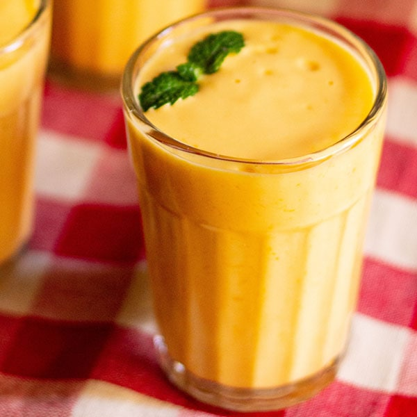

Lassi is basically a yogurt based drink that originated in the Indian subcontinent. It is typically a blend of yogurt, water or milk, spices and sometimes fruit.
Lassi can be made sweet or salty. Another popular type of lassi all over the world is Mango Lassi.